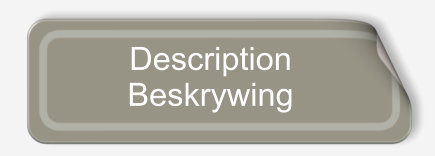
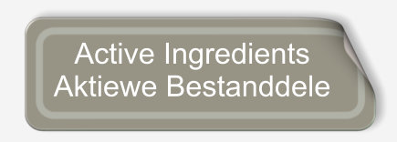
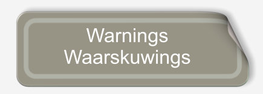
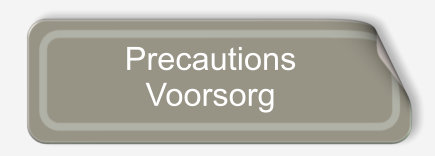
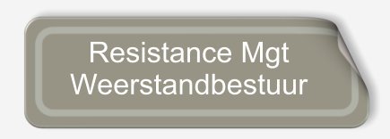

Welcome to Amistar





++27 (0) 8312 33 911
(Bateleur 911)
© SYNGENTA, AG
Syngenta SA (Pty) Ltd. / (Edms) Bpk.
(Co./Mpy Reg. No. 1998/013761/07)
Private Bag / Privaatsak X 60
HALFWAY HOUSE, 1685 RSA.
Tel. (011) 541-4000
Reg. Nr. L7897 : Act / Wet No. 36 of / van 1947 N - - AR 1008 : (NAMIBIË/NAMIBIA)
FUNGICIDE GROUP 11 & 3 SWAMDODERGROEP
‘n Breëspektrum suspensiekonsentraat swamdoder met sistemiese-, translaminêre- en kontakeienskappe vir die voorkomende beheer van verskeie blaarsiektes in gewasse soos gelys.
Broad spectrum suspension concentrate fungicide with systemic, translaminar and contact properties for the preventive control of different leaf diseases in crops as listed.
Aktiewe bestanddele / Active Ingredients:
asoksistrobien (strobilurien) azoxystrobin (strobilurin) 200 g/l
difenokonasool (triasool) difenoconazole (triazole) 125 g/l
EMERGENCY TEL. / NOOD TEL.
++27 (0) 8312 33 911
(Bateleur 911)
© SYNGENTA, AG
Registration holder / Registrasiehouer:
Syngenta SA (Pty) Ltd. / (Edms) Bpk.
(Co./Mpy Reg. No. 1998/013761/07)
Private Bag / Privaatsak X 60
HALFWAY HOUSE, 1685 RSA.
Tel. (011) 541-4000
1. WARNINGS: WAARSKUWINGS
Carrots .......................... 7 days
Dry beans ...................... 45 days
Groundnuts .................... 28 days
Maize, sweetcorn ............ 14 days
Potatoes ....................... 14 days
Tomatoes ....................... 7 days
NOTE: Compliance with these withholding periods will ensure that residues do not exceed local Maximum Residue Limits.
Notify all inhabitants in the immediate vicinity of the area to be sprayed and issue the necessary warnings. Do not spray over or allow drift to contaminate water or adjacent areas.
Although this remedy has been extensively tested under a large variety of conditions, the registration holder does not warrant that it will be effective under all conditions because the action and effect thereof may be affected by factors such as abnormal soil, climatic and storage conditions; quality of dilution water, compatibility with other substances not indicated on the label and the occurrence of resistance of the disease against the remedy concerned, as well as by the method, time and accuracy of application. The registration holder furthermore does not accept responsibility for damage to crops, vegetation, the environment, or harm to man or animal or for lack of performance of the remedy concerned due to failure of the user to follow the label instructions or to the occurrence of conditions which could not have been foreseen in terms of the registration. Consult the supplier in the event of any uncertainty.
2. PRECAUTIONS: VOORSORG
..............Back